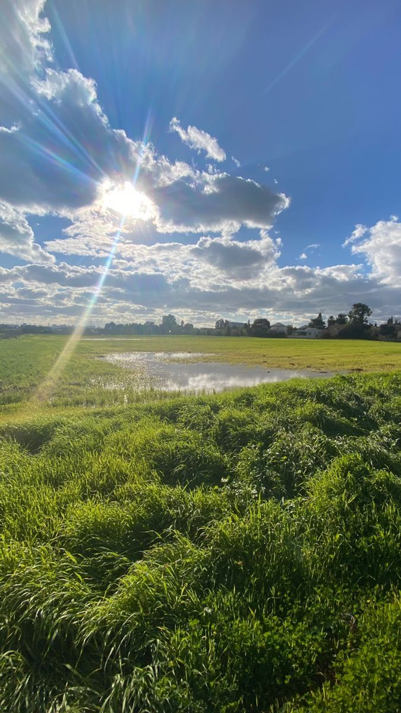
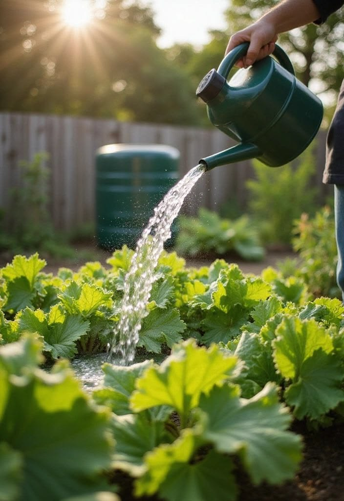
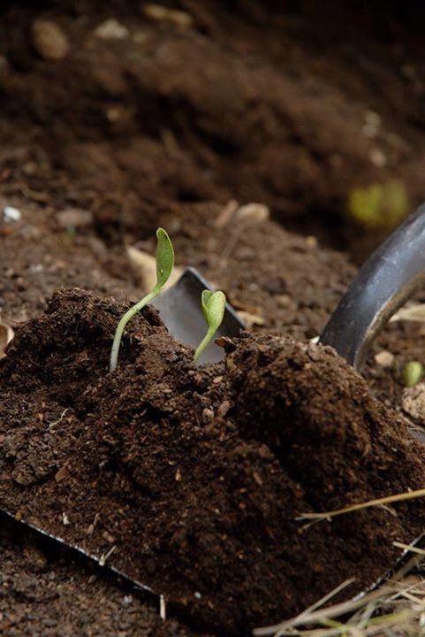
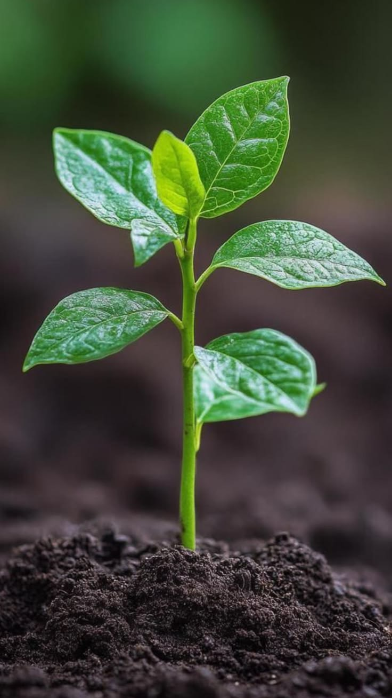

CUIDADO DE LOS VEGETALES
☀️Cuidados para una buena cosecha...




🥕Zanahoria
Necesita riegos constantes y moderados, manteniendo siempre la tierra húmeda pero nunca encharcada, ya que el exceso de humedad provoca que las raíces se pudran y la falta de agua hace que crezcan pequeñas, duras o amargas; es recomendable regar poco pero seguido, especialmente en épocas secas. Es fundamental retirar las malas hierbas con frecuencia, ya que crecen con mucha facilidad y compiten por el agua, los nutrientes y la luz, reduciendo el desarrollo de las plantas. Se debe realizar el aclareo cuando las plántulas tengan unos 3 o 4 centímetros de altura, dejando una separación de entre 5 y 8 centímetros entre cada una, ya que si están muy juntas sus raíces se deforman por falta de espacio. También conviene aflojar suavemente la capa superficial del suelo cada cierto tiempo para que el aire circule mejor y las raíces puedan profundizar sin dificultad, evitando que se forme una costra dura por el efecto del sol o la lluvia. Además, es recomendable abonar con materia orgánica antes de sembrar y evitar el uso de fertilizantes muy ricos en nitrógeno, que favorecen el crecimiento de hojas en lugar de engrosar la raíz comestible. ¡Nuestro vegetal seleccionado!.
🌿Cilantro
Requiere riegos frecuentes y suaves, manteniendo la humedad del suelo en todo momento, ya que si se seca, la planta entra en maduración rápida, florece y produce semillas pronto, haciendo que sus hojas pierdan sabor, se vuelvan duras y dejen de ser aptas para el consumo; en días calurosos puede ser necesario regar incluso dos veces al día, procurando no mojar demasiado el follaje para evitar la aparición de hongos. Prefiere ubicaciones con luz solar moderada, recibiendo entre 4 y 6 horas de sol al día; en climas muy cálidos es mejor colocarla en lugares con sombra parcial durante las horas de mayor intensidad, ya que el sol directo y continuo reseca la planta y acelera su ciclo de vida. Se debe mantener el terreno libre de malas hierbas que le quiten nutrientes y, para prolongar su tiempo de producción, es indispensable cortar los tallos que comienzan a florecer apenas se noten, ya que si se dejan crecer, la planta deja de generar hojas nuevas. También es conveniente abonar cada 3 o 4 semanas con fertilizantes suaves ricos en potasio y fósforo, que ayudan a mantener el sabor y la calidad de las hojas, y protegerla de vientos fuertes que pueden romper sus tallos delgados.
🥬Espinaca
Necesita riegos abundantes y muy frecuentes, ya que es una planta que contiene mucha agua y la requiere en grandes cantidades para desarrollar hojas tiernas y sabrosas; lo ideal es mantener el suelo siempre húmedo, aplicando el agua por la base y evitando mojar las hojas en exceso, ya que la humedad acumulada en el follaje favorece la aparición de enfermedades fúngicas como el mildiu o la roya. Es muy sensible a las altas temperaturas, por lo que cuando el clima se calienta demasiado la planta florece rápidamente, detiene su crecimiento y las hojas se vuelven amargas, duras y de menor valor nutricional; por eso, en épocas de calor es recomendable colocarla en zonas con sombra parcial o protegerla con mallas que filtren la luz solar. Se debe retirar las malas hierbas con regularidad, ya que crecen muy rápido y compiten por los recursos necesarios para su desarrollo, y también es importante aflorar ligeramente la tierra alrededor de las plantas para mejorar la circulación del aire y la absorción de nutrients. Además, responde muy bien a aportes frecuentes de abonos orgánicos, que ayudan a mantener un crecimiento continuo y hojas de gran tamaño y calidad, y es conveniente vigilar la aparición de plagas como los pulgones o los gusanos, que suelen alimentarse de su follaje tierno.